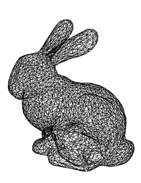

Let's face it, for us the software is not the product, it's what you do with it that excites us. Sometimes we forget to roll out the latest and greatest versions because we're busy with the next one. So check the list below and grab the version that takes your fancy; whether you're simply after the latest version of the master branch, or you're testing a new feature from a pull request.
We're currently building against the versions of Rhinocommon, Grasshopper and GH_IO that ship with Rhinoceros SR9 and Grasshopper 0.9.75.
Proper releases available at the usual place.